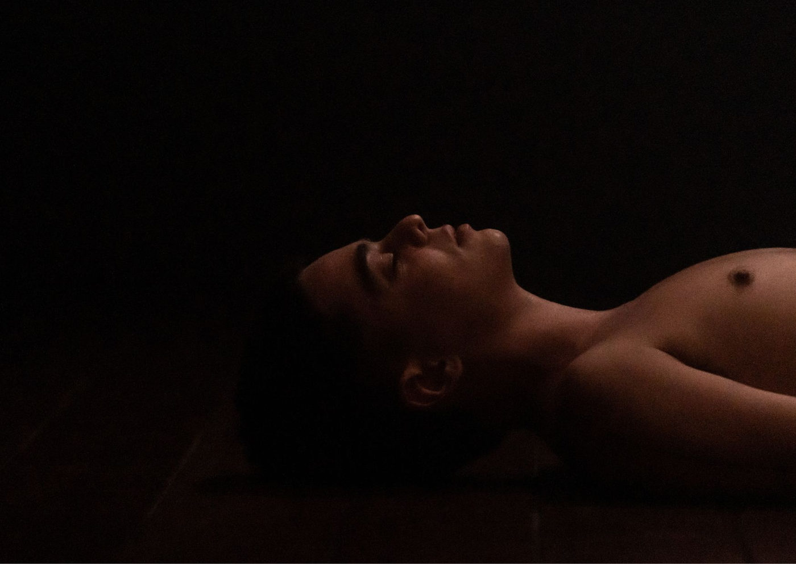

Foto — Thaís Grechi
Dança
Espetáculo de Dança "Encarnación" Explora Identidade de Gênero em Estreia no Sesc Pompeia em Fevereiro
Prepare-se para uma experiência única com "Encarnación", um espetáculo de dança concebido por Flow Kountouriotis que aterrissa no Sesc Pompeia em fevereiro, ofe…